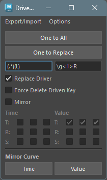

Driven Key Tools
Overview
A tool to assist in editing set driven keys.
Mainly provides the following features for set driven keys:
- Save and load
- Copy and paste
- Mirror animation curves
- Several utility features
How to Launch
Launch the tool from the dedicated menu or with the following command.
import faketools.tools.rig.drivenkey_tools_ui
faketools.tools.rig.drivenkey_tools_ui.show_ui()
Save and Load Set Driven Keys
Saves set driven keys to file and reproduces from saved file.

To save set driven keys to file, follow these steps:
Select nodes with set driven keys (multiple selection allowed).
Select
ExportorExport FilefromExport/Importmenu.Exportsaves to TEMP folder.Export Filelets you choose save destination.
To load set driven keys from file, follow these steps:
- Select
ImportorImport FilefromExport/Importmenu.Importloads from TEMP folder.Import Filelets you choose file to load.
- Set driven keys saved in file are reproduced, and target nodes are selected.
Copy and Paste Set Driven Keys
Copies and pastes set driven keys. There are two methods: One to All and One to Replace.

One to All (From One to All)
Copies set driven keys from one node to multiple nodes.
To copy, follow these steps:
- Select source node.
- Add select destination nodes (multiple selection allowed).
- Press
One to Allbutton.
One to Replace (To Replaced Node)
Copies set driven keys from one node to nodes found
in scene by replacing that node’s name. For node name
replacement, uses field below
One to Replace button. (Replaced by Python
regular expression.)
To copy, follow these steps:
- Select source node (multiple selection allowed).
- Press
One to Replacebutton. Replaced nodes are searched from scene and copied.
- Replace Driver
- Also uses replaced driver node name.
- Force Delete Driven Key
- If replaced node already has set driven keys, deletes all except the driven keys to apply and copies.
- Mirror
- Mirrors T (Translate) R (Rotate) S (Scale) animation curves in Time or Value direction for replaced nodes.
Mirror Animation Curves
Mirrors animation curves.

To mirror, follow these steps:
- Select driven key animation curves to mirror (multiple selection allowed).
- Press
TimeorValuebutton.- Pressing
Timebutton mirrors animation curve in time direction. - Pressing
Valuebutton mirrors animation curve in value direction.
- Pressing
Option Menu
There are several additional features.

- Select Driven Key Nodes
- Selects nodes with set driven keys.
- If nodes are already selected in scene, selects nodes with set driven keys within those nodes.
- If nothing is selected, selects nodes with set driven keys within all nodes in scene.
- Selects nodes with set driven keys.
- Cleanup Driven Key
- Cleans up nodes with set driven keys. Organizes the
following situations:
- Deletes driven keys where driver doesn’t exist.
- Deletes driven keys where all values are the same and all tangent values are 0.0.
- If after deletion satisfying above conditions, blendWeighted node has no animCurve connected or only one connected, deletes that blendWeighted node.
- Just cleans everything up.
- Cleans up nodes with set driven keys. Organizes the
following situations: